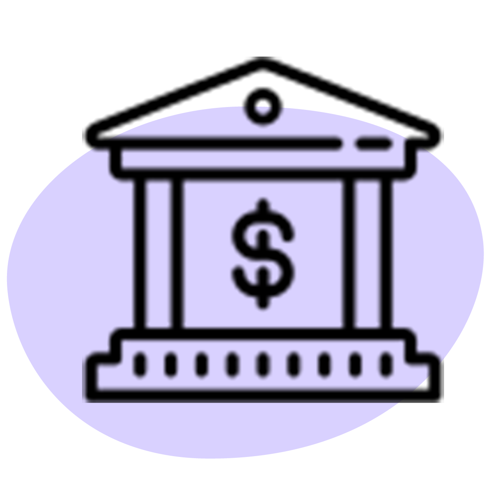

Hast du dich schon einmal gefragt, warum es überhaupt Geld gibt? Warum es auf unserem Sparkonto an Wert verliert und wie du deine Ersparnisse richtig investierst, um dich auf
Finanzkrisen vorzubereiten?
Machen wir eine Zeitreise zurück in die Steinzeit. Die Menschen lebten in kleinen Sippen, sammelten Pflanzen, Früchte, Samen, Wurzeln, Pilze und jagten nach Fleisch und Fisch. Die Völker wurden immer sesshafter und begannen mit dem bewussten und gesteuerten Anbau von Nahrungsmitteln (Ackerbau) und der Viehzucht. Wer eine Familie zu ernähren hatte, bewältigte diese Aufgabe entweder durch den eigenen Anbau und die eigene Viehzucht oder spezialisierte sich auf ein bestimmtes Gewerbe. Der Überschuss aus der eigenen Produktion wurde gegen den Überschuss anderer eingetauscht. Der Wert der Rohstoffe und Dienstleistungen war undefiniert. Man handelte anhand der Nachfrage und des Angebots immer wieder aufs Neue.
Durch den immer grösser werdenden Marktplatz trieben sich unter den Händler:innen immer mehr Reibereien und Streitigkeiten auf. Es war an der Zeit etwas Neues zu schaffen, um die Waren und Dienstleistungen messen zu können und den Handel zu erleichtern. Nach einigen gescheiterten Möglichkeiten, kamen die
Lyder:innen – ein Volk aus dem Gebiet der heutigen Türkei – auf die Idee, kleine identische Münzen aus Edelmetallen zu giessen. Die Münzen wurden beidseitig geprägt und waren so viel Wert, wie ihr Gewicht.
Der Tauschhandel nahm weltweit immer mehr zu. Der Wert aller Waren und Dienstleistungen wurde an den Münzen gemessen. Die Handelsstädte waren daran interessiert, die Münzprägungen in die eigenen Hände zu nehmen. Sie kauften die
Münzstätte (Institutionen bei welchen Münzen geprägt werden) auf, um ihre eigenen Münzen zu prägen. Den Bürger:innen gaben sie die Möglichkeit, sich die Münzen für einen vorbestimmten
Zins auszuleihen. Für die Dienstleistung und die Bereitstellung der Münzen, verdienten die Münzstätte somit an den Zinsen der Bürger:innen.
Doch für die Händler:innen welche monatelang unterwegs waren, wurde das Gewicht der Münzen zum Verhängnis. Die Säcke wurden schwer und sie wurden des Öfteren ausgeraubt. Stattdessen wurden Schuldscheine eingeführt. Der Schuldschein ist eine von einem:r Schuldner:in ausgestellte Urkunde, welche dem:r Gläubiger:in als Nachweis über eine Schuldverpflichtung dient. Das Papiergeld wurde von den Münzen immer mehr abgelöst.
Das war die Entstehung des sogenannten «
Fiatgeldes». Das Geld wurde durch günstigere Rohstoffe, als es an Wert hat, hergestellt. Fiatgeld hat keinen inneren Wert und es ist im Wesentlichen ein Versprechen, dass die Scheine dazu in der Lage sind, Güter gegen ihren verschriebenen Wert eintauschen zu können. Damit die Regierung und die
Zentralbanken den Wert des zur Verfügung gestellten Fiatgeldes garantieren konnten, haben sie es an ihre Goldreserven gebunden. Dadurch konnte die Regierung und die Zentralbanken nur so viel Fiatgeld in den Umlauf bringen, wie sie an Goldreserven hinterlegt hatten.
Das grosse Problem, welches sich durch die Geldverleihung etablierte, waren die unbezahlbaren
Zinsen.
Warum unbezahlbaren Zinsen?Das von den Zentralbanken und der Regierung zur Verfügung gestellte Geld, welches sie den Bürger:innen ausliehen, konnte nach der vorbestimmten Zeitspanne nicht inklusive den Zinsen zurückbezahlt werden, denn alleine sie hatten die Macht der Geldausschüttung. Das sich im Umlauf befundene Geld wuchs nicht ohne weitere Geldvergabe durch die Zentralbanken oder der Regierung, auf welche wiederum auch Zins verlangt wurde.
Praxisbeispiel
Stell dir vor du lebst mit fünf Freunden auf einer einsamen Insel in der Pazifik. Nur du kannst Geld herstellen, also leihst du für ein Jahr allen fünf Freunden 100.– mit 5% Zinsen aus.
In einem Jahr dürfen dir alle fünf Freunde mit dem Zuschlag der Zinsen, 105.– zurückzahlen. Geht das? Vor einem Jahr hast du insgesamt 500.– Geld in den Umlauf gebracht. Nun müssen dir deine Freunde mit den Zinsen insgesamt 525.– zurückbringen, ohne dass sie selber Geld herstellen können.
So kommt es dazu, dass dir am Ende des Jahres nur vier von fünf Freunden dein Geld inkl. den Zinsen, also die 105.–, bezahlen können. Der fünfte Freund kann dir lediglich 80.– zurückzahlen. Doch um ein weiteres Jahr auf der Insel überleben zu können, braucht auch dein fünfter Freund wieder 100.–. Also entscheidest du dich ihm diese 100.– für wieder 5% Zinsen auszuleihen und schreibst dir auf, dass er dir noch 25.– vom Vorjahr schuldet.
Deine anderen vier Freunde möchten nun 200.– ausleihen. Da du in der Zwischenzeit genug Zeit hattest, um weitere Münzen und Schuldscheine zu produzieren, hast du die Möglichkeit ihnen das Doppelte auszuleihen und forderst dafür wieder 5% Zinsen. Insgesamt befindet sich nun 900.– (4 x 200.– + 1 x 100.–) im Umlauf.
Nach einem Jahr erhältst du von allen fünf Freunden dein zur Verfügung gestelltes Geld inkl. den 5% Zinsen und die 25.– Schulden, also total 970.– (5% von 900.– + 25.– Schulden), zurück.
Am Ende des Jahres möchten dir deine fünf Freunde das ausgeliehene Geld inkl. den Zinsen wieder zurückbringen. Doch diesmal können nur drei Freunde ihre Abmachung erfüllen und bringen dir die versprochenen 210.– zurück. Der vierte Freund kann dir sein geliehenes Geld ohne die Zinsen bezahlen. Der fünfte Freund kann dir von seinen geforderten 130.– (100.– + 5.– Zins + 25.– Schulden), nur 60.– zurückbringen und hat nun bereits 70.– Schulden.
Was geschieht, wenn du deinen fünf Freunden noch weitere 10 Jahre Geld für Zinsen ausleihen wirst?
Wir leben in einer Welt, die immer stärker von Armut und Reichtum geprägt wird. Die Art unseres Geldes hat sich durch die Digitalisierung weiterentwickelt, doch das grundlegende Prinzip nicht. Das Ungleichgewicht nimmt kontinuierlich zu.
In der Schweiz wurden Sozialversicherungen, Krankenkassen und weitere Lösungsansätze erstellt, um die Gesellschaft wirtschaftlich tragen zu können. Monatlich zahlen alle erwerbstätigen Bürger:innen einen Betrag an Organisationen, damit arbeitsunfähige Bürger:innen finanzielle Unterstützung erhalten.
Zurück zur Entstehung des Fiatgeldes
Wie bereits erwähnt, durften die Regierung und Zentralbanken ursprünglich nur so viel Geld drucken, wie sie an Goldreserven hinterlegt hatten.
Bis im ersten Weltkrieg kämpfte Deutschland gegen die
Entente, was sehr hohe Kosten verursachte. Damit Deutschland während des Krieges an mehr Ressourcen (Waffen, Bomben, Soldaten etc.) kam, brauchten sie mehr Geld. Sie beschlossen die Goldbindung aufzuheben, um beliebig viel Geld nachzudrucken und sich damit die benötigten Ressourcen beschaffen zu können.
50 Jahre später geschah etwas ähnliches, als die USA in Vietnam Krieg führten. Die USA liess Billionen von Dollar Scheinen drucken, obwohl sie nicht so viele Goldreserven hatten. So kam immer mehr Geld in den Umlauf und das bereits im Umlauf befundene Geld verlor kontinuierlich an Wert (auch Inflation genannt). Bis vor 50 Jahren waren die Notenbanken des Landes verpflichtet, allen Bürger:innen $ 35 – 1
Feinunzen Gold – auszugeben. 1971 entschied Amerika die Goldbindung aufzuheben. Andere Länder zogen nach und das quasi oberste Aufsichtsgremium über die Währungen der Welt, der internationale Währungsfonds, empfahl nach 1976 seinen Mitgliedsländern die Goldbindung ebenfalls aufzuheben.
Durch die Aufhebung der Goldbindung wurde Geld noch stärker zentralisiert. Ein zentralisiertes Finanzsystem bedeutet, dass allein eine Regierung oder Zentralbank über eine Währung bestimmt. Sie haben das Recht Geld aus dem Nichts zu schöpfen und somit mehr Geld in den Umlauf zu bringen.
Wie kann eine Regierung oder eine Zentralbank Geld «aus dem Nichts» schöpfen?
Als Beispiel: Die Nationalbanken in der
Eurozone haben heute einen
Mindestreservesatz von 1 %. Das heisst wenn ein:e Bürger:in als Beispiel € 100’000 möchte, muss die Bank 1 % davon als Notenbankgeld bei der EZB (Europäische Zentralbank) hinterlegen. Die anderen € 99’000 werden aus dem Nichts geschöpft, für welche man der Bank trotzdem Zinsen zahlen muss.

Welche Auswirkungen hat das für uns?
Je mehr Geld in einem System im Umlauf ist, desto weniger Wert hat das bereits vorhandene Geld und das Preisniveau steigt (auch Inflation genannt). Der Staat kann durch die Regulierung der Inflation bis zu einem gewissen Grad die Wirtschaft steuern, welches seine Vor- und Nachteile mit sich bringt. Grundsätzlich ist die Zentralbank mit der Steuerung der Geldmenge daran interessiert, die Rahmenbedingungen für eine gesunde Wirtschaftsentwicklung zu schaffen. Desto stärker jedoch die Inflationsraten sind, desto schnellere Auswirkungen bringt es mit sich.
Praxisbeispiel
- Die Regierung und die Zentralbanken lassen immer mehr Fiatgeld in den Umlauf.
- Die Bürger:innen besitzen immer mehr Geld. Ihr bestehendes Geld verliert jedoch immer mehr an Wert.
- Die Waren, Ressourcen, Mieten, Steuern, Versicherungen… werden immer teurer.
- Das Volk kann sich den immer teurer werdenden Lebensunterhalt nicht mehr leisten.
- Die Kaufkraft sinkt.
- Unternehmen müssen ihre Waren und Dienstleistungen noch teurer verkaufen, um ihren Angestellten mehr Lohn zahlen zu können.
- Die Konkurrenz unter den Unternehmen steigt. Viele Arbeitsprozesse werden digitalisiert oder durch günstigere Ressourcen aus dem Ausland abgelöst.
- Aufgrund der sinkenden Kaufkraft und der Globalisierung, verlieren immer mehr Bürger:innen ihre Arbeitsstelle und sind auf die Hilfe von staatlichen Institutionen angewiesen.
- Der Staat befindet sich in einer Wirtschaftskrise.
- Der Staat kann sich aus der Wirtschaftskrise retten oder es erwartet uns eine Staatspleite.
Henry Ford sagte einst: «Würden die Menschen das Geldsystem verstehen, hätten wir vor morgen früh noch eine
Revolution.»
Die Probleme sind vorhersehbar, wenn nichts unternommen wird. Nur sehr wenige Menschen setzen sich damit auseinander, obwohl es am Ende des Tages jede:r betrifft.
Wie geht es weiter? Kann es so weiter gehen? Was kann unternommen werden? Wie kannst du dich finanziell auf deine Zukunft vorbereiten? Was wäre geschehen, wenn wir noch heute beim Prinzip des Tauschhandels geblieben wären? Können uns Kryptowährungen retten?